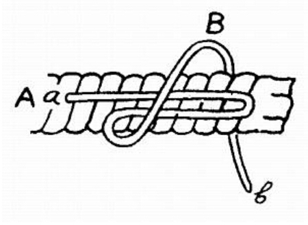
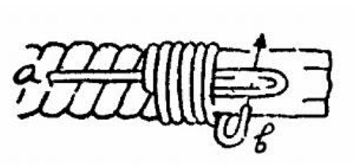
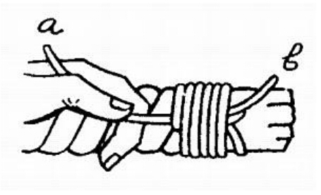
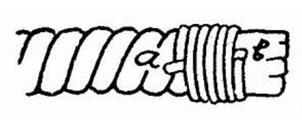

Simpul Ujung tali berguna agar pintalan tali tidak lepas.
Cara membuat simpul ujung tali :
1. Tali A ditaruk sedemikian rupa. Belitkan tali B beberapa kali mengelilingi tali A

2. Bagian ujung B masukan ke dalam sosok

3.Setelah ujung B masuk, bagian ujung A ditarik sehingga tali B tertarik ke dalam belitan

4. Ujung A dan B digunting, maka dengan demikian ujung atau pintalan tali tidak akan terlepas.
